Yasiru RanasingheI am a 4th year Ph.D. student at the Vision & Image Understanding Lab, Johns Hopkins University, advised by Dr. Vishal M. Patel. My research focuses on scene understanding, object detection, self-supervised learning, and leveraging foundation models for agent-based AI. I am currently spending the summer as a research intern at Apple. Email / Google Scholar / LinkedIn Actively looking for Fall 2025 internship opportunities! |
{kind=link}
ResearchMy research focuses on advancing visual scene understanding through object detection, self-supervised learning, and the use of foundation models. I am particularly interested in building vision systems that generalize across tasks and environments, with an emphasis on integrating foundation models into agent-based AI for perception and decision-making. |
News
- 2025
- May: Started summer internship at Apple.
- May: One paper accepted at AVSS'25.
- February: One paper accepted at CVPR'25.
- 2024
- March: One paper accepted at IEEE FG'24.
- February: Two papers accepted at CVPR'24.
Selected Publications
|
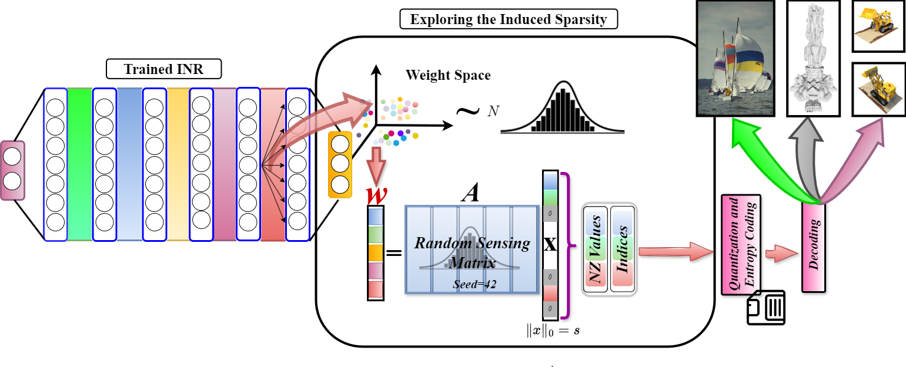
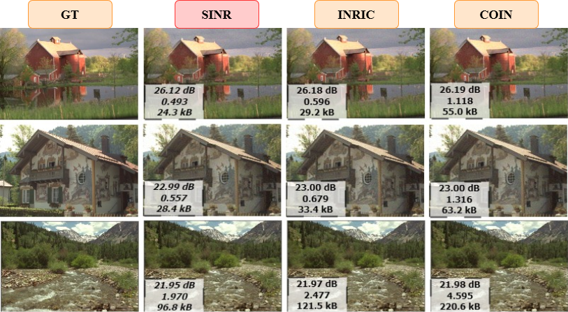
|
Authors: Dhananjaya Jayasundara, Sudarshan Rajagopalan, Yasiru Ranasinghe, Trac D. Tran, and Vishal M. Patel CVPR, 2025This work presents a novel compression approach for implicit neural representations (INRs) by encoding their weight space using a sparse high-dimensional dictionary. Unlike prior INR compression methods, SINR avoids transmitting learned dictionaries and remains compatible with existing INR frameworks. It achieves significant storage savings while preserving reconstruction quality across diverse signal types including images, occupancy fields, and NeRFs. |
|
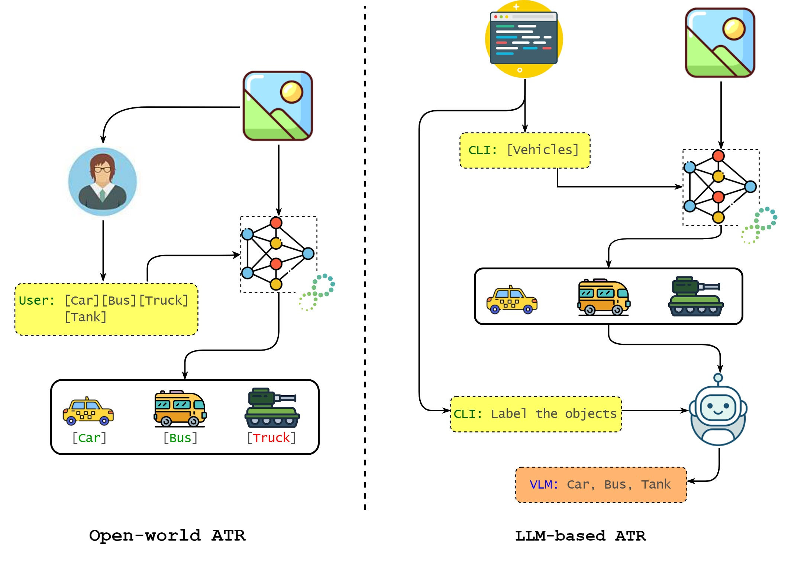
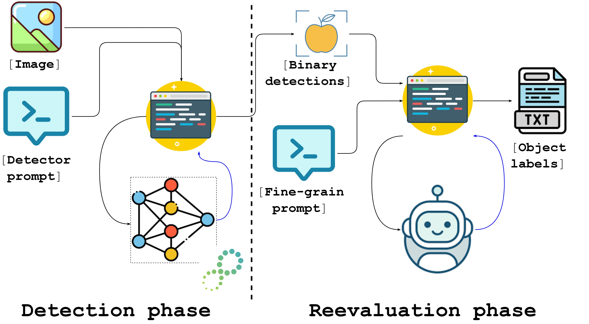
|
Authors: Yasiru Ranasinghe, Vibashan VS, James Uplinger, Celso De Melo, and Vishal M. Patel AVSS, 2025This work presents a robust pipeline for zero-shot automatic target recognition by combining the localization power of open-world detectors with the recognition abilities of large vision-language models (LVLMs). It evaluates multiple LVLMs on military vehicles under challenging conditions and highlights strategies for reliable recognition in novel domains. |
|
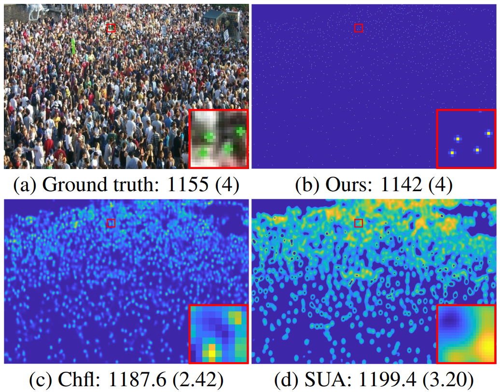
 |
Authors : Yasiru Ranasinghe, Nithin Gopalakrishnan Nair, Wele Gedara Chaminda Bandara, and Vishal M. Patel CVPR, 2024The paper proposes a novel approach to perform crowd counting with multi-hypothesis aggregation using denoising diffusion probabilistic models. The approach outperforms existing state-of-the-art methods for crowd counting. |
|
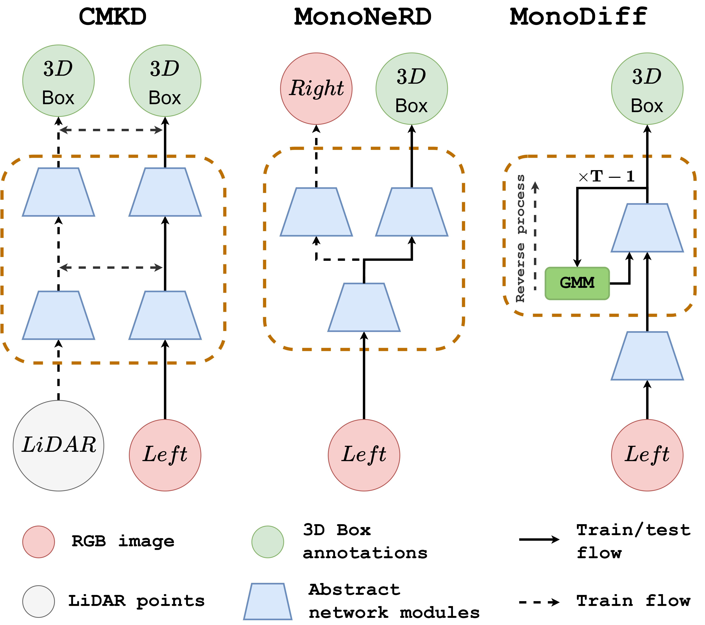
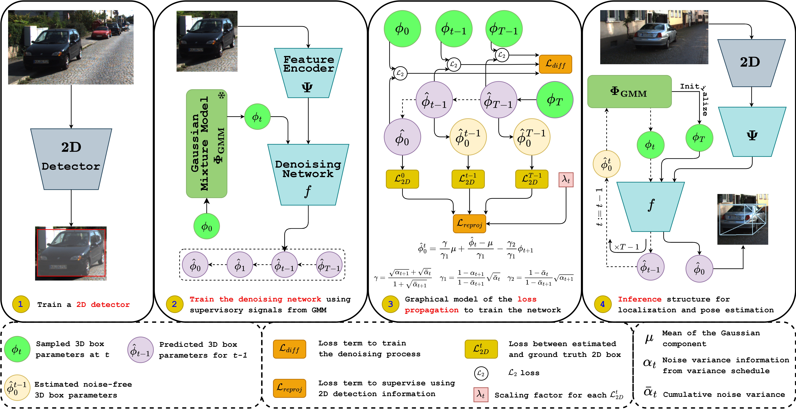 |
Authors : Yasiru Ranasinghe, Deepti Hegde, and Vishal M. Patel CVPR, 2024The paper proposes using diffusion models to perform monocular 3D object detection and pose estimation. MonoDiff does not require additional modalities to generate intermediate representations to produce box parameters. |
|
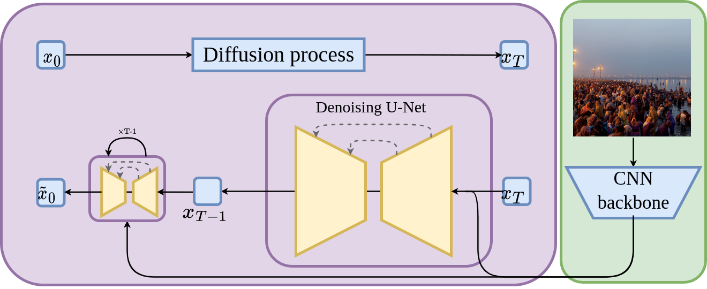
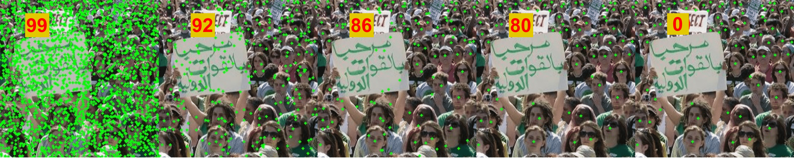 |
Authors : Yasiru Ranasinghe, and Vishal M. Patel IEEE FG, 2024The paper proposes using diffusion models to localize crowd in images and count the number of people in a scene. The proposed method generates the head locations as a generative task without a separate detector for point proposals. |
|
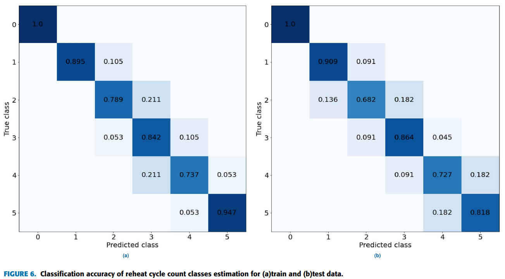
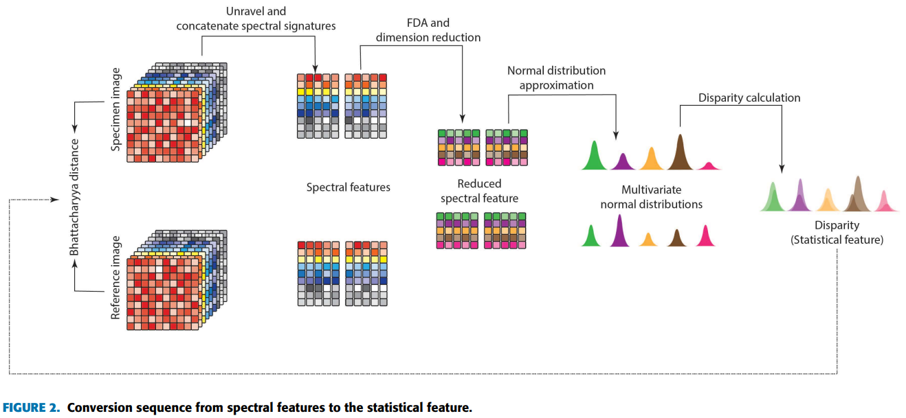
|
Authors : DYL Ranasinghe , HK Weerasooriya, S Herath, MP Bandara Ekanayake, HMVR Herath, GMRI Godaliyadda, and Terrence Madhujith IEEE Access, 2022The article process a novel non invasive method for food quality analysis, specifically in terms of adulteration, using multispectral images and statistical signal processing and image processing. The proposed method yielded statistically significant results and with significant practical implications. |
|
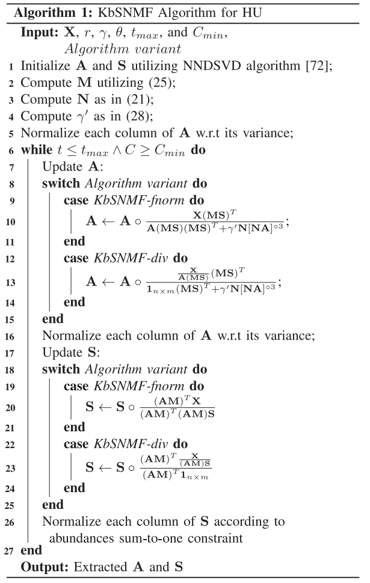
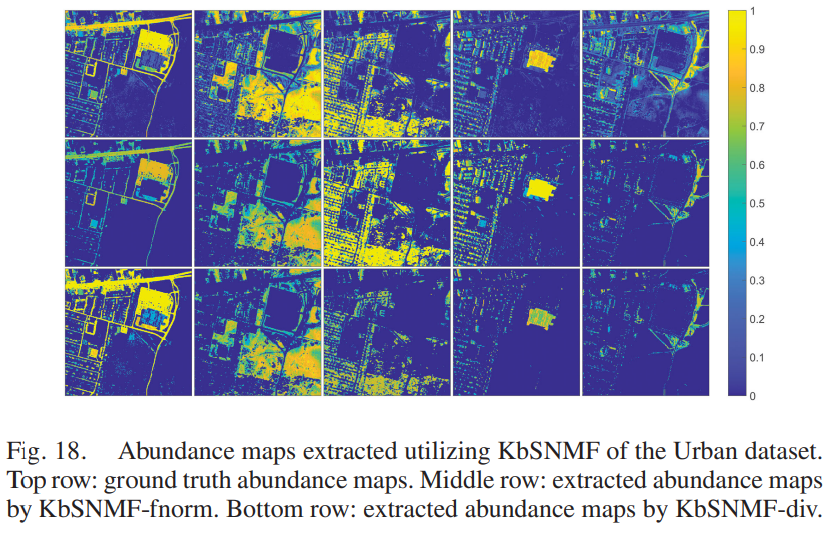
|
Authors : EMMB Ekanayake, HMHK Weerasooriya, DYL Ranasinghe , S Herath, B Rathnayake, GMRI Godaliyadda, MPB Ekanayake, and HMVR Herath IEEE Journal of Seleted Topics in Applied Earth Observation and Remote Sensing, 2021The paper proposes a novel algorithm to extract endmembers and abundances of hyperspectral remote sensing data. We introduced a regularizer for the nonnegative matrix factorization which improves independence of endmember statistics. The algorithm illustrated superior performance interms of endmber extraction from hyperspectral data. |
|
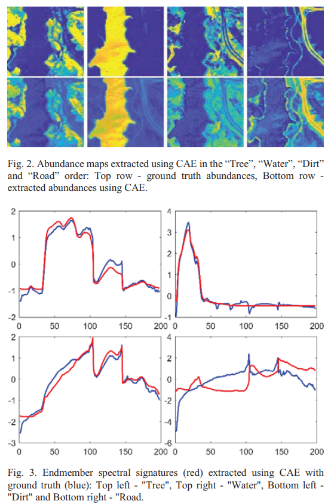
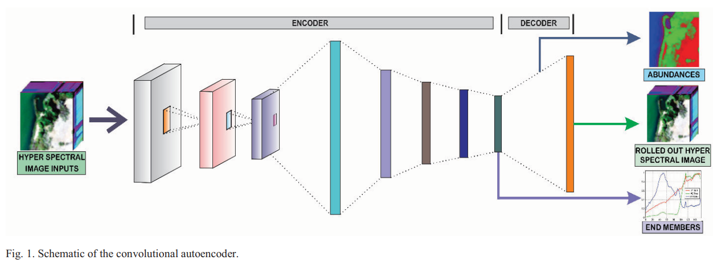
|
Authors : Yasiru Ranasinghe, Sanjaya Herath, Kavinga Weerasooriya, Mevan Ekanayake, Roshan Godaliyadda, Parakrama Ekanayake, and Vijitha Herath IEEE International Conference on Industrial and Information Systems, 2020The paper process a convolutional autoencoder to realize the nonnegative matrix factorization using deep learning architectures. The proposed methods is applied to extract endmembers and abundances of hyperspectral remote sensing data. The proposed method produced state-of-the-art results on abundance estimation and competitive results in terms of endmember extraction. |
|
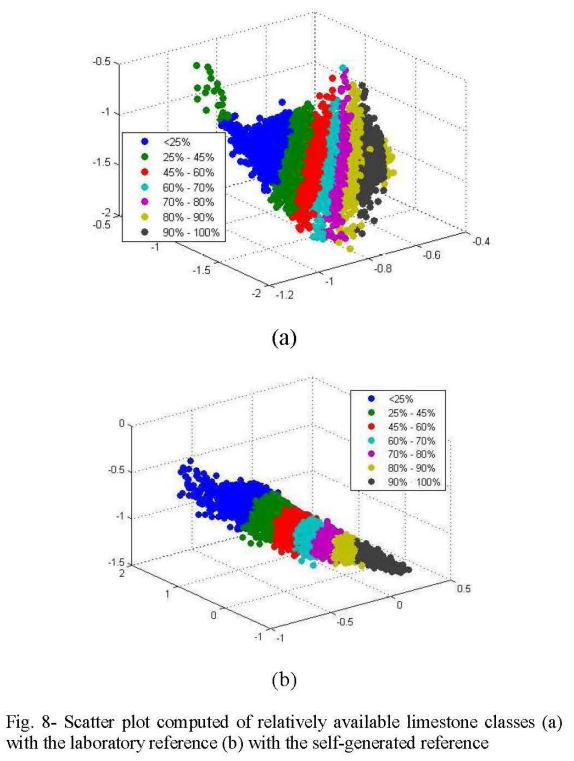
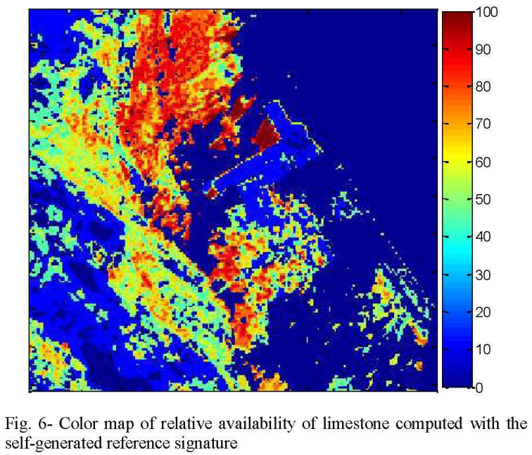
|
Authors : DYL Ranasinghe, HMS Lakmal, HMHK Weerasooriya, EMMB Ekanayake, GMRI Godaliyadda, HMVR Herath, and MPB Ekanayake IEEE International Conference on Industrial and Information Systems, 2019The paper proposed an algorithm to determine the availability of surface limestone using hyperspectral satellite imagery of an area. We incorporate traditional image and signal processing, and statistical data analysis techniques in the algorithm. Further, we generated a self-supervisied representation for the hyperspectral signature of limestone in the absence of a groundtruth to improve classification accuracy and spatial continuity of the probability map. |
Template taken from here. Last updated October 2023.